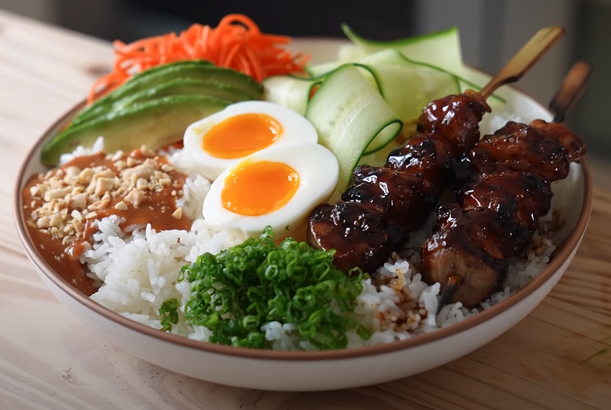

One Dollar Rice Bowl

Description
This recipe is taken from Joshua Weissman's YouTube series 'But Cheaper'. Here's a link to the original video.
Ingredients
- 630g of medium-grain or short-grain rice
- granulated sugar
- soy sauce
- white vinegar
- sriracha
- peanut butter
- garlic
- cornstarch
- honey
- eggs
- cucumber
- carrots
- lime
- olive oil
- sesame oil
- avocado
- 6 boneless chicken thighs
- salt
- pepper
- green onion
- peanuts
How to Cook
- Wash the 630g of rice by placing it in a large fine mesh sieve set over a large bowl, fill it all the way up with water, agitate it, pour out the water, and repeat one to two more times. Then lightly drain the rice, pop it into a rice cooker and add 710 milliliters of water to your rice (finger test to ensure that's correct). Now close and turn on the rice cooker. Once that's done you have beautifully cooked rice and the main ingredient for this dish.
- Now for the Spicy Peanut Sauce. To a small pan add 42g of granulated sugar, 50g of soy sauce, 36g of white vinegar, and stir and heat that just till it dissolves and then let it cool slightly. One minute or two later add 33g of sriracha along with 229g of smooth peanut butter and one clove of garlic (grated). Now whisk all that together and depending on your peanut butter you may have to whick in a quarter cup of water and 4g of cornstarch if it begins to seize a bit and separate. This makes quite a bit of sauce so keep it in the fridge and thank me later.
- Now for the glaze we'll be using for the chicken. Get a small pot, add 67g of soy sauce, 55g of white vinegar, and 53g of honey. Heat the pot over medium-high to bring to a boil and reduce for one minute. While that's cooking, we'll quickly make a slurry to add onto the sauce to make it more like Teriyaki. To do this we'll combine 8g of corn starch and 9g of water and whisk until it's dissolved. Once you're done simmering the sauce, add about 3/4 of your slurry, stir it in and let it boil for 30 seconds or until you have the consistency of Teriyaki sauce. Set the sauce to the side because it will be used when we grill our chicken.
- Now we make a classic running soft-boil egg. Get a pot of boiling water over medium-high heat and then slightly reduce the temp so its a gentler boil. Add in 4 whole eggs and let these boil for exactly 6 minutes and 30 seconds. Then immediately remove from the water and place them into an ice bath until they're warm but not hot, about 5 minutes. Now carefully crack the shell all over and peel the egg under a light stream of water to help get all the shell out. Finally, cut them in have to reveal the liquid gold.
- For the cucumber, it's real easy. Either slice them into coins or, for a more 'fine dining' experience, you can cut your cucumbers in half and then slice them in a mandolin lengthwise to get pepperdill-like slices.
- For the carrots, julienne cut one to two large carrots and toss that together with salt, the juice of one lime, and 3g of sesame oil. Now toss it together until it's evenly coated.
- For the avocado, cut into quarters by first cutting it in half and those halves into another half each. Now peel them and slice into quarter inch slices and drizzle some flaky salt and lime juice on top of them.
- Last but not least, our chicken. Cut six boneless skinless chicken thighs into one-inch pieces. Skewer them onto wooden skewers and you should end up with about six to eight total skewers. Lightly grease those chicken pieces with oil, season them generously with salt and pepper on all sides then just preheat the grill to medium-high heat. Once hot, place your skewers and let them cook for about 5-10 minutes turning every minute or so and as soon as they're cooked all the way through with a nice browning layer around, brush them on all sides with your glaze and then blast them on high heat to caramelize that glaze deeply under the chicken. Then immediately remove the skewers from the grill to prevent burning and do this for all the skeweres. Now you're done.
- Lastly, place all of these ingredients onto a bowl as you please (you can use the picture on the website for reference) and you have yourself a delicious meal.